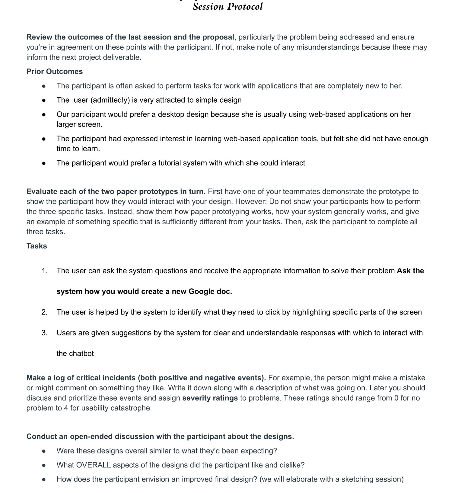
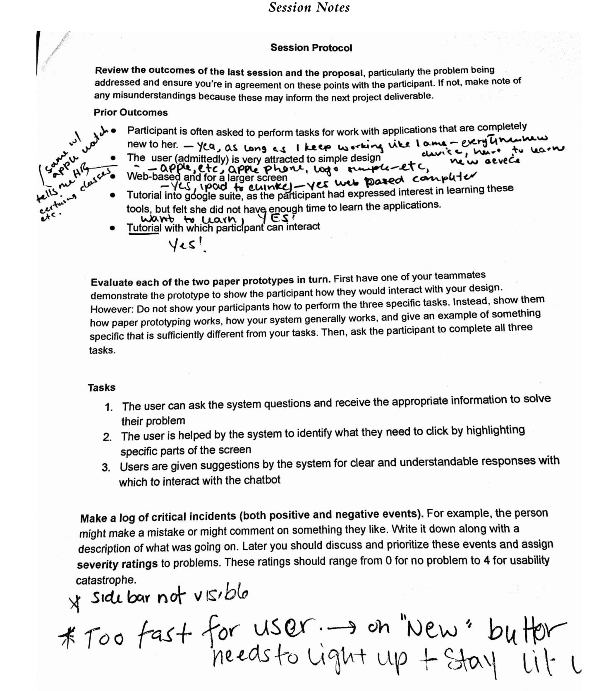
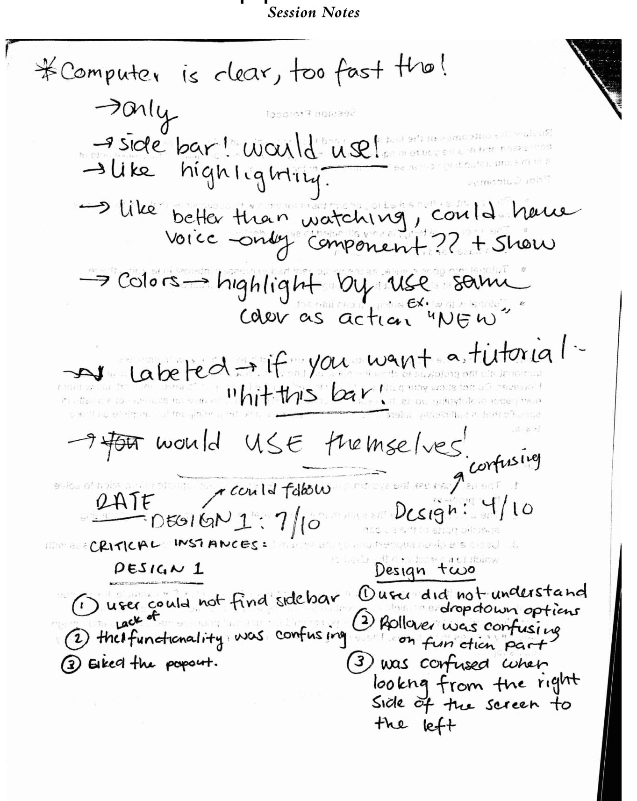
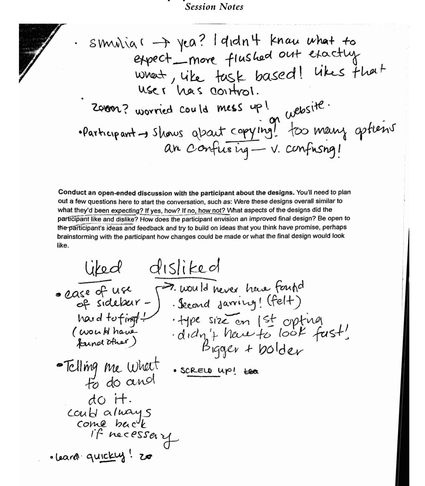
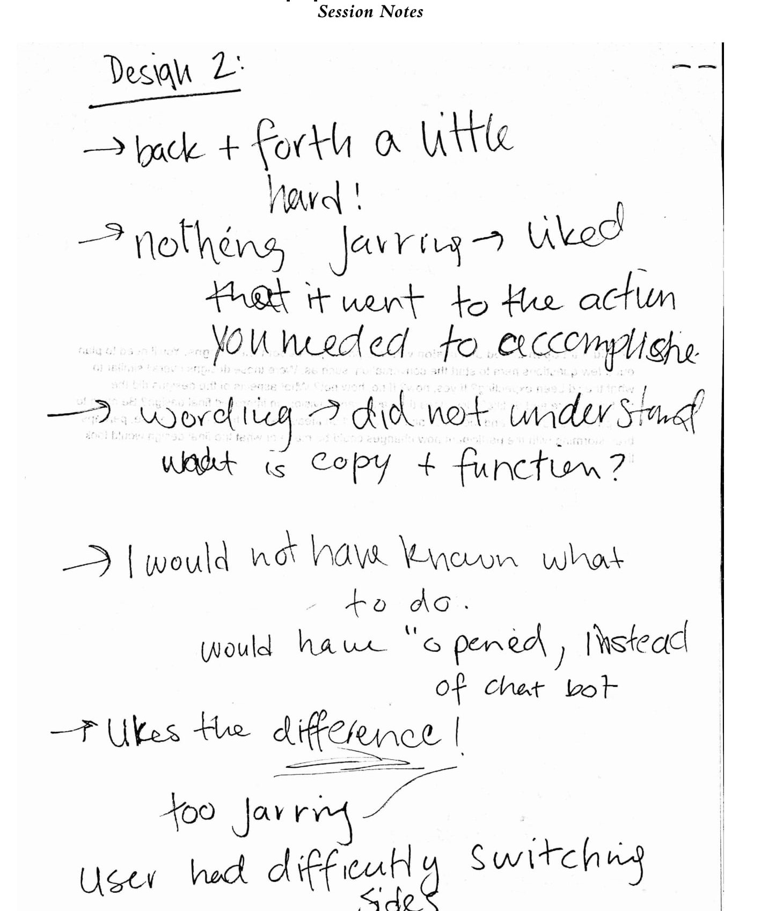
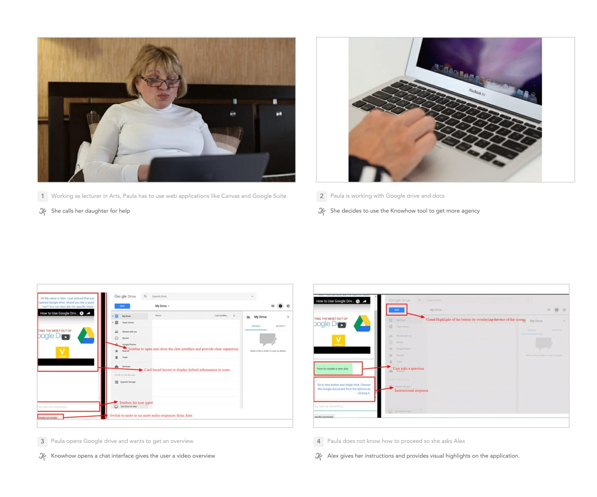
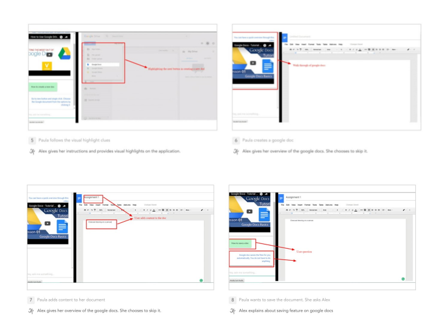

KnowHow
Empowering senior users to use web apps - Participatory Design
Scenario
20-22% of the U.S. population will be over 65 by the year 2030, and their capabilities differ greatly from those of younger users. Age-related decline of both cognitive and physical ability has many implications for older generations’ technology use.
Process
1.Problem Discovery
" I am teaching a class in NYC and I need to mark who is present in order to get paid, but I couldn’t understand how to do that. I almost called the school, but my husband, thankfully, was able to make it work." - User P.
Through our literature review
- As people age, working memory declines. Seniors are often not digital natives, so navigating an interface that would be second nature to a younger user often results in an older user having to rely on their working memory to remember what certain icons and other visual shortcuts mean.
- In T.A. Hart et al.’s study, researchers found that information overload was common, especially in novice senior users. This overload is often a combination of too much information needing to be stored in working memory and a lack of ability to easily access basic information about completing tasks.
- Older people also tend to be less able to recover from user error and are therefore over all more hesitant in interacting with an interface, spending a great amount of their interaction time simply considering where to go.
THE PROBLEM
Older users are expected to understand and use web applications. Although some web applications contain help sections, it is a wall of text which does not selectively answer a user’s question. It may deter them from learning the application on their own and lead to reliance on family and friends.
2.Define Phase
Meet our User: P.
A 70 year old female who is an Art Therapist and Lecturer, and is an Apple user who owns an Apple watch, Macbook, and an iPhone .She states her comfort level with technology as a 3 out of 5.
Use case and context
Paula has started to lecture at the School of the Visual Arts in New York City. Upon her first lecture she needed to learn how to use Canvas, and the Google Suite. In using both she is constantly frustrated. She was expected to learn these applications and use them on her own. Usually, she is under a deadline to complete specific tasks, like create a Google Slides presentation, or update a Google Doc.
THE IDEA
To solve the issues like cognitive load , unfamiliarity with web apps and lack of guidance or help suited for older adults while using web apps, we created an interactive web based helper using collaborative design. We used the Google Docs web app use case for designing and testing our helper as our participant has use for it.
Why Collaborative Design
In creating an interface for older users, collaborative design is essential to success. In D. Hawthorn’s article Interface design and engagement with older people, researchers attempted to develop a successful interactive tutorial for older people. Throughout their design process, the researchers found large and unexpected inconsistencies in the designers’ assumptions and the way senior users interact with a system, further driving in the point that stakeholder participation in this context is vitally important.
Why interactive web-based helper
We conducted an unstructured user interview session to find out their use of technology, their habits, what works for them and what does not. Our key findings:
- User was prone to asking their daughter for assistance. User finds personal assistances much useful and points that personal assistance provides the advantage of one clear, concise, answer, as opposed to a number of search results that may use jargon or be otherwise inaccessible.
- Older users also tend to be less search-literate and are less practiced in wording their queries in a way that would yield the answer to their question.
- Finally, older users are often not looking to master software, but to perform simple, individual tasks. Our participant strayed away from walkthroughs and tutorials, because they took too much time and gave her information she did not want or need.
3.Wireframing
We created seven sketches for product ideas.
We also defined 3 core tasks for our users
- Ask how to create a new Google Document
- Learn how to perform document operations.
- Figure out the system capabilities
Further, we choose 2 sketches to add interaction for the tasks. The first sketch was an unobtrusive way to enable the user to interact with the bot on screen. This version also allowed the user to quickly recall the last conversations in case they needed to reference them. We chose sketch six, because we wanted to test how the user would react to the chatbot being accessible via right click, and how intense they wanted an overlay on the screen. For reviewing the wireframes with our users, we created 2 task- based wireflows.

Low Fidelity Prototypes
Aim was to meet user needs and define a good product concept
Low Fidelity :One
- Pop out smart chatbot. User can ask any question in context of the web app; questions can be specific to every button or tasks could be done on the page.
- Simple answers and directions for tasks. Directions not only have descriptions of steps but also with highlight of where users need to click on the interface.
- Follow up , walkthrough and short video. Considering user’s worry about jumping to a new web page, the walkthrough will appear on the current page.
Low_Fi : Two
- Provide Chatbot and Function option for all buttons and elements on the screen.
- “Function” is an literal elaboration of the option user choose, in case user are not familiar with new buttons but want to obtain quick explanation.
- “Chatbot” is another interaction users have with the system where they can ask series of questions about the task and the button. Users can ask the system and be given clear and understandable answers
- The system will highlight buttons and elements on the screen to use in interactions.
- The system also provides a short video for users, in case they have more questions about specific steps.
Usability Review
For the session protocol, our findings for the design:
- The user likes simple, uncluttered design. User did not want too many options. The function, chatbot options were too much for her sometimes.
- User only uses a desktop for work on web apps so wants to see dekstop first design elements. They like the side bar char more than the pop up chat option.
- Wanted to learn to use web apps not just for work and liked the interactive guidance and exploration features. Wanted more natural interaction with the chatbot
The session took 46 minutes and we recorded the data by taking notes. Our session protocol and session notes:
    Building High Fidelity Prototype
Combining ideas from both the low fidelity prototype and its design review, we created a interactive high fidelity prototype. Aim was to improve the interaction
Highlights of our high fidelity prototype:
- We aimed to integrated the solution in the web browser instead of the web app as found out that the .
- It is left aligned and occupies same height as the application. It contains chatbot interface that takes user input and guides user in performing tasks
- The chatbot is not hard coded but is based on an intelligent agent. Our intelligent agent was named Alex as shown in fig 1. The intelligent agent is hybrid of rule based and machine learning. Due to the scope of creating a prototype, we did not train the agent using large dataset and take full advantage of the machine learning aspect. We defined rules in the intelligent agent as shown in fig 2. Knowhow uses Natural Language Processing (NLP) in its chatbot interface so that they can ask questions in a natural, conversational way. What this means is that user can ask questions
Storyboard
 Technology Used
We used Javascript, html/CSS and API.ai service for creating the high fidelity prototype.
Some of the key highlights:
- The participant wanted the system to be based on her actions which the system provided.
- User did not like the speed of the prior system and found it jarring and hard to understand.
- In addition, she reminded us that she did not like the type-size of the prior versions, because they were very hard to see.
By creating a detailed prototype, we uncovered new findings and issues.
Design Reflections
We focused on understanding the chatbot interactions and user acceptance. Further steps include studying chatbot help for different kinds of web applications. Limitations being that we only considered three tasks for our product. We also designed the Agent for Google Drive and Docs only. We learned that testing at each level of design is crucial to improving the underlying product.
The team consisted of 4 HCI masters' students at HCI. I worked on sketching, Wireframing, creation of user study protocols, creation of high fidelity, testing high fidelity prototype.
- Client: Coursework
- Date: March 2017
- Service: UX Design - Participatory Design